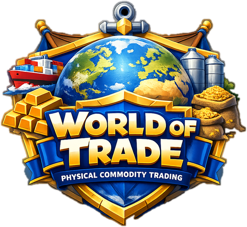

Short lessons that build from “what is a cargo” up to quotational periods, basis, hedge ratios, letters of credit, demurrage, freight and value at risk. No jargon dumped on you — every answer is explained.
Runs in the browser · installs as an app · works offline · no sign-up
Most material on this business is either a 400-page textbook or a glossary. Neither makes you able to answer a question under pressure. So this is built the other way round: you answer first, and the explanation lands while you still care about it.
A lesson is four or five exercises. You can finish one waiting for a coffee, and you keep a streak by doing one a day.
Get one wrong and it returns later in the same lesson — and it stays on a list, so Practice keeps handing it back to you until you take it first time.
Every exercise carries an explanation written the way a desk would put it. Numbers are worked through, not asserted.
Incoterms, QP, basis, contango, hedge ratio, variation margin, LC discrepancies. The things that actually decide whether a trade made money.
Finish a unit and you can sit its checkpoint: eight questions drawn across every lesson, five lives, 75% first time to earn the badge.
No account, no email, no tracking. Progress lives in your browser’s storage and nowhere else — and it installs to your phone and runs with no signal.
Eight units, in the order a new joiner on a desk would actually meet them.
This is a real question from Unit 4, and the real explanation that follows it.
Your cargo is worth more, your hedge is losing, and you have no cash. What is this?
This is how well-hedged companies fail. The trade is profitable on paper and dead in cash. Liquidity and price risk are different risks.
Different mechanics for different kinds of knowledge — recall, sequence, mapping, and arithmetic you would do on a desk.
“A cargo is not a number on a screen. Somebody has to load it, insure it, finance it and be paid for it — and every one of those steps can take your margin.”
You will know what a physical trader actually gets paid for by the end of it.